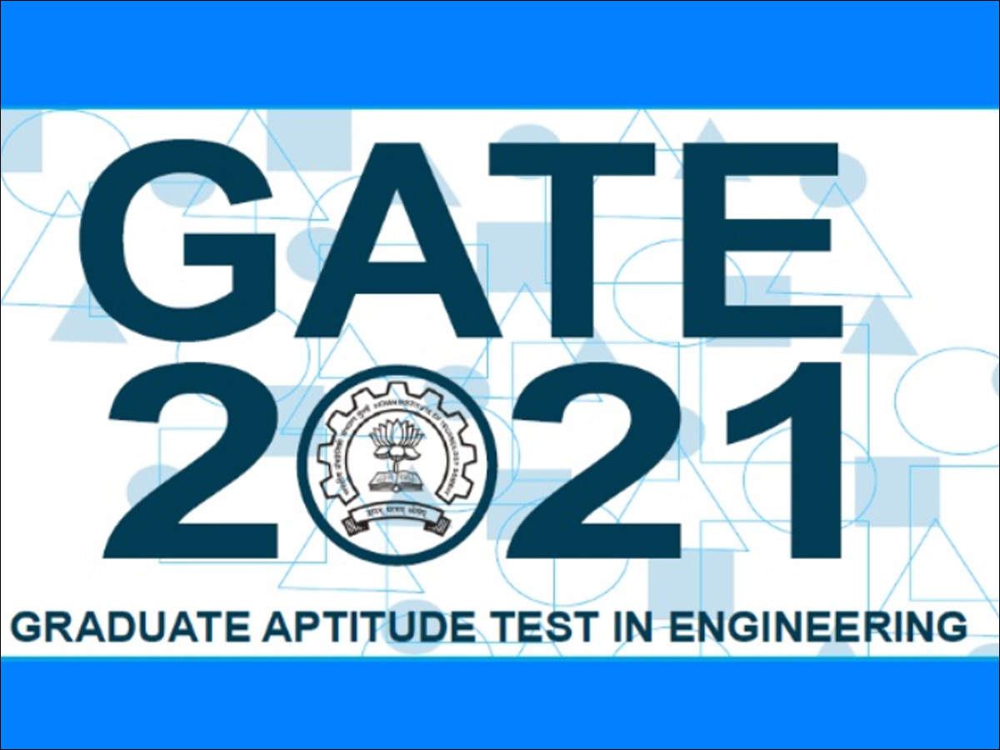
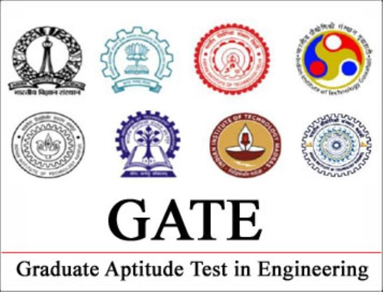
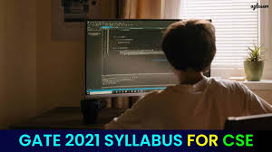

|
Gate Examination Subjects
 |
|
|

|
GATE Home
GATE Subjects
GATE CSE Resources
Abount Us
Software Engineering, Web Technologies and Numerical methods removed from GATE 2016 syllabus. Mark Distribution No subject should be skipped by a person targeting top 100 and the reason can be seen from the mark distribution in previous year GATE.  GATE Subjects in CSE
|
| Copyright © 2021 | |